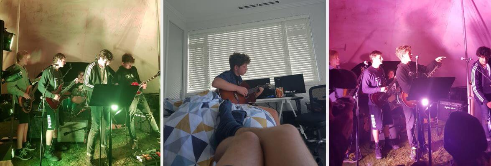
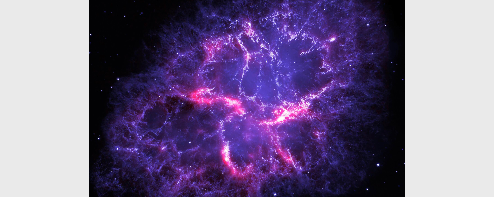
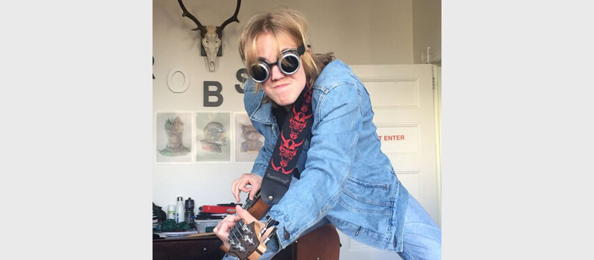

  <!-- Hero -->
<!-- Intitialising -->
<meta name="viewport" content="width=device-width, initial-scale=1">
<link rel="stylesheet" href="style.css">
<meta name="viewport" content="width=device-width, initial-scale=1">
<script type="text/javascript" src="Java/Java%20long%20code.js"></script>
<script type="text/javascript" src="Java/Java.js"></script>

<!-- Style Sheet for title slide -->
    <style>
#overlay {
    font-family: "Century Gothic", 'Lato', sans-serif;
    position: relative;
    z-index:0;
    font-size: 3.75vw;
    margin: 0;
    top: 305px;
    letter-spacing: 1rem;
    font-weight: bold;
    color:white;
    text-align: center;
    
}
        
#underlay {
    font-family: "Century Gothic", 'Lato', sans-serif;
    position: relative;
    z-index:0;
    font-size: 3.75vw;
    margin: 0;
    letter-spacing: 1rem;
    font-weight: bold;
    top: 363.5px;
    left: -3;
    color:#000000;
    
    
}
</style>

<!-- Title Page and Navigation Bar -->
    <section class="et-hero-tabs">
    <h1><div id='underlay'>CREAMY-BEATS</div></h1>
    <h1><div id='overlay'>CREAMY-BEATS</div></h1>
    <div id="rectangle"></div>
    <div id="img"></div>
    <about>Music by Luke Creemers</about>
    <h3>Showcasing images by James Wakelin</h3>
    <div class="et-hero-tabs-container">
      <a class="et-hero-tab" href="#tab-es6">About</a>
      <a class="et-hero-tab" href="#tab-flexbox">Photos</a>
      <a class="et-hero-tab" href="#tab-react">Rocket Man</a>
      <a class="et-hero-tab" href="#tab-angular">Buddy.exe</a>
      <a class="et-hero-tab" href="#tab-other">Cherry Plumb</a>
      <span class="et-hero-tab-slider"></span>
    </div>
  </section>

  <!-- About Me Slide -->
  <main class="et-main">
    <section class="et-slide" id="tab-es6">
     <br> <br> <br> <br> <br> <br> 
        <h1>About Me</h1>
         
      <h3>I am Luke Creemers, an aspiring 16-year-old musician from Saint Kentigern College.<br> This electronic portfolio is a compendium of musical work completed throughout my life.<br> It showcases recorded songs and imagery of gigs that were collected from both <br> academic experiences and my own personal endeavours. </h3>
        
        
        
    </section>
<!-- Photos Slide -->
      <section class="et-slide" id="tab-flexbox">
       <br> <br> <br>
        <h1>Photos</h1>
         
      <h3><i>“Without music, life would be a mistake”</i> – Friedrich <br>Nietzsche</h3>
        
    </section>
 <!-- Rocket Man Music Slide -->  
      <section class="et-slide" id="tab-react">
      <br> <br> <br> <br> 
          <h1>Rocket Man</h1>
      <h3><i>2019 - Luke Creemers,   Photo Sourced from - NASA's Hubble Telescope</i></h3>
        
        <br>
          <audio controls>
  <source src="Music/rocket_man.mp3" type="audio/mp3">
  <source src="horse.mp3" type="audio/mpeg">
Your browser does not support the audio element.
</audio>
        
    </section>
 <!-- Buddy.exe Music Slide -->   
      <section class="et-slide" id="tab-angular">
        <br> <br> <br> <br>   
          <h1>Buddy.exe</h1>
      <h3><i>2018 - Stargoon</i></h3>
        
          <br>
        <audio controls>
  <source src="Music/buddy.exe.mp3" type="audio/mp3">
  <source src="horse.mp3" type="audio/mpeg">
Your browser does not support the audio element.
</audio>
        
    </section>
    
  <!-- Cherry Plumb Music Slide -->    
      <section class="et-slide" id="tab-other">
      <br> <br> <br> <br>   
          <h1>Cherry Plumb</h1>
      <h3><i>2018 - Stargoon</i></h3>
        
          <br>
        <audio controls>
  <source src="Music/cherry_plumb.mp3" type="audio/mp3">
  <source src="horse.mp3" type="audio/mpeg">
Your browser does not support the audio element.
</audio>
    </section>

      

  </main>
